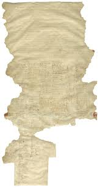
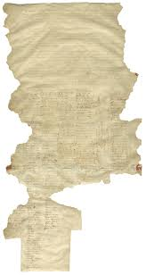
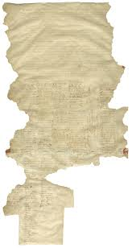

The Treaty of Waitangi is a significant document in New Zealand's history, signed on February 6, 1840, between representatives of the British Crown and various Māori chiefs. The treaty aimed to establish peaceful relations between the indigenous Māori people and the British settlers, while also laying the foundation for British sovereignty over New Zealand.
The Treaty of Waitangi consisted of three main articles:
1. Protection of Māori Rights: The first article affirmed the sovereignty of the British Crown over New Zealand while also guaranteeing the rights and possessions of the Māori people. It assured them that they would retain ownership of their lands, forests, fisheries, and other resources.
2. Ceding Sovereignty to the British Crown: The second article involved the Māori chiefs ceding sovereignty to the British Crown in exchange for protection and the benefits of British citizenship. However, there were significant differences in the interpretations of this article between the Māori and the British.
3. Equal Treatment Under the Law: The third article ensured that all Māori individuals would have the same rights and privileges as British subjects.
The Treaty of Waitangi was initially signed in both English and Māori versions, with variations in the translations leading to misunderstandings and disputes over its interpretation and implementation.
Over time, the Treaty of Waitangi has become a cornerstone of New Zealand's constitutional framework, serving as the basis for Māori land rights, treaty settlements, and the recognition of Māori rights and interests in various aspects of governance and resource management. However, its legacy remains complex, as historical grievances and ongoing challenges continue to shape relationships between Māori and the Crown.
